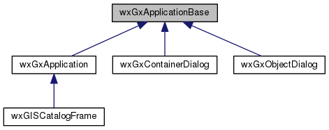
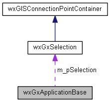

|
|
Version: 0.6.0 |


wxGxApplicationBase Class Reference
An Interface class for GxApplication. More...
#include <gxselection.h>
Inheritance diagram for wxGxApplicationBase:

Collaboration diagram for wxGxApplicationBase:

Public Member Functions | |
| wxGxSelection *const | GetGxSelection (void) |
| wxGxSelection *const | GetGxSelection (void) const |
| virtual void | SetLocation (const wxString &sPath) |
| virtual void | Undo (int nPos) |
| virtual void | Redo (int nPos) |
Protected Attributes | |
| wxGxSelection * | m_pSelection |
Detailed Description
An Interface class for GxApplication.
The documentation for this class was generated from the following files:
- /home/bishop/work/projects/nextgismanager/include/wxgis/catalogui/gxselection.h
- /home/bishop/work/projects/nextgismanager/src/catalogui/gxselection.cpp
- Generated on Fri Sep 26 2014 01:11:03 for ngm by
 1.8.6
1.8.6